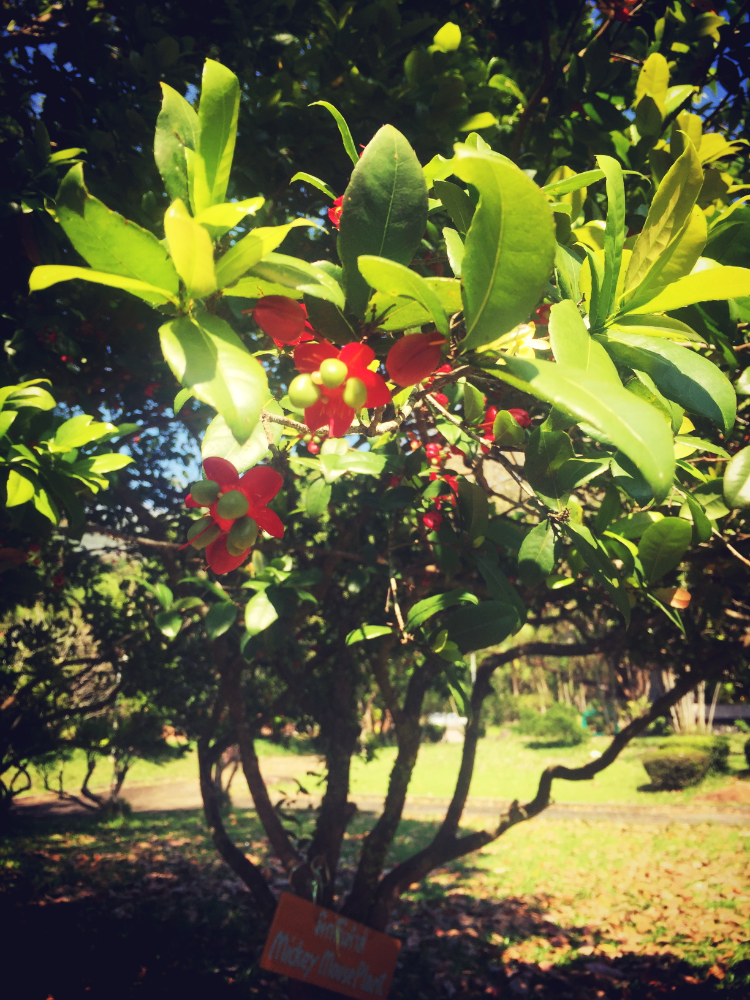
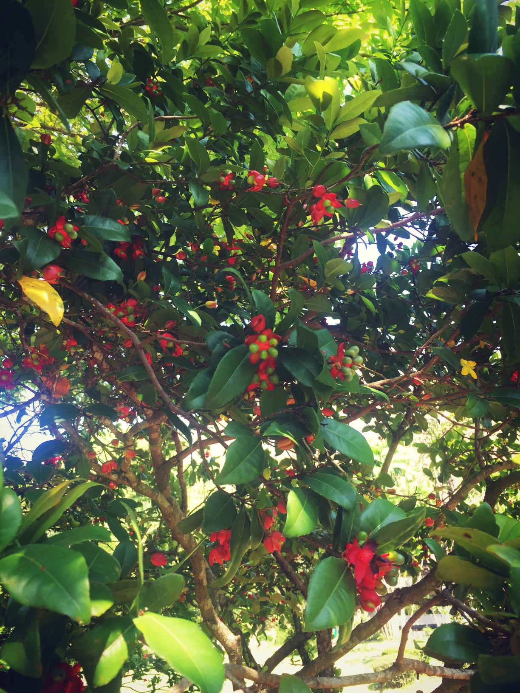

Micky mouse (มิ้กกี้เมาส์)


ประวัติ
มิกกี้เม้าส์ เป็นไม้พุ่มสูงได้ถึง 3 เมตร กิ่งก้านเยอะ พุ่มทึบ ใบแข็งหนาสีเขียวเข้ม รูปมนรี ปลายแหลม ออกดอกเป็นช่อสั้นๆ ตามปลายกิ่ง ดอกจะเติบโตเป็นสองช่วง ในช่วงที่ดอกบานระยะแรก จะมีกลีบบางสีเหลืองสด 5 กลีบ หลังจากดอกเหลืองโรยไปแล้ว กลีบรองดอกจะกลายเป็นสีแดงสด ในดอกมีเม็ด 3 - 4 เม็ด พอแก่ กลายเป็นสีดำ มองรวมแล้วเหมือนหน้าหนูมิกกี้เม้าส์ในการ์ตูนของ วอลท์ดิสนีย์ ขยายพันธุ์ด้วยการเพาะเมล็ด ขึ้นง่าย แต่โตช้า มิกกี้ เม้าส์เป็นไม้พื้นเมืองของทวีปแอฟริกา ไม้ต้นนี้เป็นไม้ที่มีเสน่ห์น่าสนใจต้นหนึ่ง เพราะเวลาให้ดอก ช่วงเป็นสีเหลืองจะดูเหลืองลออไปทั้งต้น ในขณะช่วงที่ดอกเป็นสีแดง ก็จะเห็นสีแดงไปหมดทั้งต้นเช่นกัน โดยมีเม็ดสีดำแต่งแต้มเพิ่มเสน่ห์ ให้อีก นอกจากนี้รูปทรงและพุ่มต้นของมิกกี้เม้าส์ยังสวยงามไม่แพ้ใคร

ลักษณะ
้นมิกกี้เมาส์เป็นไม้พุ่มยืนต้น เปลือกต้นสีน้ำตาลดำ แตกกิ่งก้านมาก ข้อปล้องถี่สั้น กิ่งอ่อนสีเขียว การเกาะติดของใบบนกิ่งแบบสลับ ใบเดี่ยวทรงรีสีเขียวเข้ม ปลายแหลมมีติ่งหนาม โคนแหลมมน ขอบใบเป็นหยักแบบฟันเลื่อย ปลายเป็นติ่งหนาม ก้านใบสั้นมาก ดอกออกเป็นช่อที่ปลายกิ่ง ดอกสีเหลือง กลีบดอกเป็นอิสระจากกัน ปลายโค้งมน โคนเรียวแหลม กลีบดอกบางและร่วงหลุดง่าย กลีบเลี้ยงมี 3 กลีบรูปรี กลีบงุ้มเป็นแบบช้อน ระยะแรกสีเขียว เมื่อกลีบดอกหลุดร่วงแล้วจะค่อยๆ เปลี่ยนเป็นสีแดง ผลรูปรีเมื่อแก่สีดำ เกาะติดบนฐานรองดอกสีแดงที่นูนขึ้น เมล็ดรูปรีสีดำ
Powered by w3.css